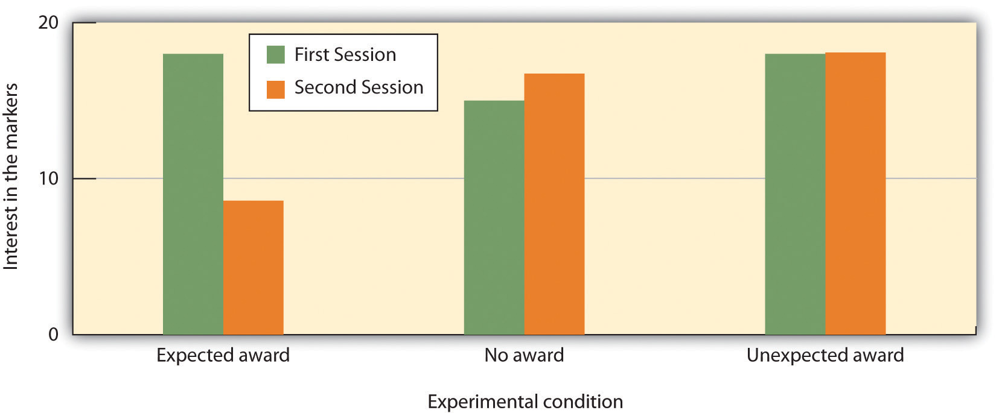

It is a continuous challenge living with post-traumatic stress disorder (PTSD), and I’ve suffered from it for most of my life. I can look back now and gently laugh at all the people who thought I had the perfect life. I was young, beautiful, and talented, but unbeknownst to them, I was terrorized by an undiagnosed debilitating mental illness.
Having been properly diagnosed with PTSD at age 35, I know that there is not one aspect of my life that has gone untouched by this mental illness. My PTSD was triggered by several traumas, most importantly a sexual attack at knifepoint that left me thinking I would die. I would never be the same after that attack. For me there was no safe place in the world, not even my home. I went to the police and filed a report. Rape counselors came to see me while I was in the hospital, but I declined their help, convinced that I didn’t need it. This would be the most damaging decision of my life.
For months after the attack, I couldn’t close my eyes without envisioning the face of my attacker. I suffered horrific flashbacks and nightmares. For four years after the attack I was unable to sleep alone in my house. I obsessively checked windows, doors, and locks. By age 17, I’d suffered my first panic attack. Soon I became unable to leave my apartment for weeks at a time, ending my modeling career abruptly. This just became a way of life. Years passed when I had few or no symptoms at all, and I led what I thought was a fairly normal life, just thinking I had a “panic problem.”
Then another traumatic event retriggered the PTSD. It was as if the past had evaporated, and I was back in the place of my attack, only now I had uncontrollable thoughts of someone entering my house and harming my daughter. I saw violent images every time I closed my eyes. I lost all ability to concentrate or even complete simple tasks. Normally social, I stopped trying to make friends or get involved in my community. I often felt disoriented, forgetting where, or who, I was. I would panic on the freeway and became unable to drive, again ending a career. I felt as if I had completely lost my mind. For a time, I managed to keep it together on the outside, but then I became unable to leave my house again.
Around this time I was diagnosed with PTSD. I cannot express to you the enormous relief I felt when I discovered my condition was real and treatable. I felt safe for the first time in 32 years. Taking medication and undergoing behavioral therapy marked the turning point in my regaining control of my life. I’m rebuilding a satisfying career as an artist, and I am enjoying my life. The world is new to me and not limited by the restrictive vision of anxiety. It amazes me to think back to what my life was like only a year ago, and just how far I’ve come.
For me there is no cure, no final healing. But there are things I can do to ensure that I never have to suffer as I did before being diagnosed with PTSD. I’m no longer at the mercy of my disorder, and I would not be here today had I not had the proper diagnosis and treatment. The most important thing to know is that it’s never too late to seek help. (Philips, 2010)Philips, P. K. (2010). My story of survival: Battling PTSD. Anxiety Disorders Association of America. Retrieved from http://www.adaa.org/living-with-anxiety/personal-stories/my-story-survival-battling-ptsd
The topic of this chapter is learningThe relatively permanent change in knowledge or behavior due to experience.—the relatively permanent change in knowledge or behavior that is the result of experience. Although you might think of learning in terms of what you need to do before an upcoming exam, the knowledge that you take away from your classes, or new skills that you acquire through practice, these changes represent only one component of learning. In fact, learning is a broad topic that is used to explain not only how we acquire new knowledge and behavior but also a wide variety of other psychological processes including the development of both appropriate and inappropriate social behaviors, and even how a person may acquire a debilitating psychological disorder such as PTSD.
Figure 7.1 Watson and Skinner

John B. Watson (right) and B. F. Skinner (left) were champions of the behaviorist school of learning.
Sources: Watson photo courtesy of Amaro Studios, http://www.flickr.com/photos/39584782@N08/4198517298. Skinner photo courtesy of pto0413, http://www.flickr.com/photos/pto0413/4776302017/in/photostream.
Learning is perhaps the most important human capacity. Learning allows us to create effective lives by being able to respond to changes. We learn to avoid touching hot stoves, to find our way home from school, and to remember which people have helped us in the past and which people have been unkind. Without the ability to learn from our experiences, our lives would be remarkably dangerous and inefficient. The principles of learning can also be used to explain a wide variety of social interactions, including social dilemmas in which people make important, and often selfish, decisions about how to behave by calculating the costs and benefits of different outcomes.
The study of learning is closely associated with the behaviorist school of psychology, in which it was seen as an alternative scientific perspective to the failure of introspection. The behaviorists, including John B. Watson and B. F. Skinner, focused their research entirely on behavior, to the exclusion of any kinds of mental processes. For behaviorists, the fundamental aspect of learning is the process of conditioningThe ability to connect stimuli (the changes that occur in our environment) with responses (behaviors or other actions).—the ability to connect stimuli (the changes that occur in the environment) with responses (behaviors or other actions).
But conditioning is just one type of learning. We will also consider other types, including learning through insight, as well as observational learning (also known as modeling). In each case we will see not only what psychologists have learned about the topics but also the important influence that learning has on many aspects of our everyday lives. And we will see that in some cases learning can be maladaptive—for instance, when a person like P. K. Philips continually experiences disruptive memories and emotional responses to a negative event.
In the early part of the 20th century, Russian physiologist Ivan Pavlov (1849–1936) was studying the digestive system of dogs when he noticed an interesting behavioral phenomenon: The dogs began to salivate when the lab technicians who normally fed them entered the room, even though the dogs had not yet received any food. Pavlov realized that the dogs were salivating because they knew that they were about to be fed; the dogs had begun to associate the arrival of the technicians with the food that soon followed their appearance in the room.
Figure 7.2 Ivan Pavlov
Ivan Pavlov’s research made substantial contributions to our understanding of learning.
Source: Photo courtesy of LIFE Photo Archive, http://commons.wikimedia.org/wiki/File:Ivan_Pavlov_LIFE.jpg.
With his team of researchers, Pavlov began studying this process in more detail. He conducted a series of experiments in which, over a number of trials, dogs were exposed to a sound immediately before receiving food. He systematically controlled the onset of the sound and the timing of the delivery of the food, and recorded the amount of the dogs’ salivation. Initially the dogs salivated only when they saw or smelled the food, but after several pairings of the sound and the food, the dogs began to salivate as soon as they heard the sound. The animals had learned to associate the sound with the food that followed.
Pavlov had identified a fundamental associative learning process called classical conditioning. Classical conditioningLearning that occurs when a neutral stimulus (e.g., a tone) becomes associated with a stimulus (e.g., food) that naturally produces a behavior. refers to learning that occurs when a neutral stimulus (e.g., a tone) becomes associated with a stimulus (e.g., food) that naturally produces a behavior. After the association is learned, the previously neutral stimulus is sufficient to produce the behavior.
As you can see in Figure 7.3 "4-Panel Image of Whistle and Dog", psychologists use specific terms to identify the stimuli and the responses in classical conditioning. The unconditioned stimulus (US)Something (such as food) that naturally triggers a response. is something (such as food) that triggers a natural occurring response, and the unconditioned response (UR)The naturally occuring response (such as salivation) that follows the unconditioned stimulus. is the naturally occurring response (such as salivation) that follows the unconditioned stimulus. The conditioned stimulus (CS)A neutral stimulus that, after being repeatedly presented prior to the unconditioned stimulus, begins to evoke a similar response as the unconditioned stimulus. is a neutral stimulus that, after being repeatedly presented prior to the unconditioned stimulus, evokes a similar response as the unconditioned stimulus. In Pavlov’s experiment, the sound of the tone served as the conditioned stimulus that, after learning, produced the conditioned response (CR)An acquired response to the formerly neutral stimulus., which is the acquired response to the formerly neutral stimulus. Note that the UR and the CR are the same behavior—in this case salivation—but they are given different names because they are produced by different stimuli (the US and the CS, respectively).
Figure 7.3 4-Panel Image of Whistle and Dog
Top left: Before conditioning, the unconditioned stimulus (US) naturally produces the unconditioned response (UR). Top right: Before conditioning, the neutral stimulus (the whistle) does not produce the salivation response. Bottom left: The unconditioned stimulus (US), in this case the food, is repeatedly presented immediately after the neutral stimulus. Bottom right: After learning, the neutral stimulus (now known as the conditioned stimulus or CS), is sufficient to produce the conditioned responses (CR).
Conditioning is evolutionarily beneficial because it allows organisms to develop expectations that help them prepare for both good and bad events. Imagine, for instance, that an animal first smells a new food, eats it, and then gets sick. If the animal can learn to associate the smell (CS) with the food (US), then it will quickly learn that the food creates the negative outcome, and not eat it the next time.
After he had demonstrated that learning could occur through association, Pavlov moved on to study the variables that influenced the strength and the persistence of conditioning. In some studies, after the conditioning had taken place, Pavlov presented the sound repeatedly but without presenting the food afterward. Figure 7.4 "Acquisition, Extinction, and Spontaneous Recovery" shows what happened. As you can see, after the intial acquisition (learning) phase in which the conditioning occurred, when the CS was then presented alone, the behavior rapidly decreased—the dogs salivated less and less to the sound, and eventually the sound did not elicit salivation at all. ExtinctionThe reduction in responding that occurs when the conditioned stimulus is presented repeatedly without the unconditioned stimulus. refers to the reduction in responding that occurs when the conditioned stimulus is presented repeatedly without the unconditioned stimulus.
Figure 7.4 Acquisition, Extinction, and Spontaneous Recovery

Acquisition: The CS and the US are repeatedly paired together and behavior increases. Extinction: The CS is repeatedly presented alone, and the behavior slowly decreases. Spontaneous recovery: After a pause, when the CS is again presented alone, the behavior may again occur and then again show extinction.
Although at the end of the first extinction period the CS was no longer producing salivation, the effects of conditioning had not entirely disappeared. Pavlov found that, after a pause, sounding the tone again elicited salivation, although to a lesser extent than before extinction took place. The increase in responding to the CS following a pause after extinction is known as spontaneous recoveryThe increase in responding to the conditioned stimulus (CS) after a pause that follows extinction.. When Pavlov again presented the CS alone, the behavior again showed extinction until it disappeared again.
Although the behavior has disappeared, extinction is never complete. If conditioning is again attempted, the animal will learn the new associations much faster than it did the first time.
Pavlov also experimented with presenting new stimuli that were similar, but not identical to, the original conditioned stimulus. For instance, if the dog had been conditioned to being scratched before the food arrived, the stimulus would be changed to being rubbed rather than scratched. He found that the dogs also salivated upon experiencing the similar stimulus, a process known as generalization. GeneralizationThe tendency to respond to stimuli that resemble the original conditioned stimulus. refers to the tendency to respond to stimuli that resemble the original conditioned stimulus. The ability to generalize has important evolutionary significance. If we eat some red berries and they make us sick, it would be a good idea to think twice before we eat some purple berries. Although the berries are not exactly the same, they nevertheless are similar and may have the same negative properties.
Lewicki (1985)Lewicki, P. (1985). Nonconscious biasing effects of single instances on subsequent judgments. Journal of Personality and Social Psychology, 48, 563–574. conducted research that demonstrated the influence of stimulus generalization and how quickly and easily it can happen. In his experiment, high school students first had a brief interaction with a female experimenter who had short hair and glasses. The study was set up so that the students had to ask the experimenter a question, and (according to random assignment) the experimenter responded either in a negative way or a neutral way toward the students. Then the students were told to go into a second room in which two experimenters were present, and to approach either one of them. However, the researchers arranged it so that one of the two experimenters looked a lot like the original experimenter, while the other one did not (she had longer hair and no glasses). The students were significantly more likely to avoid the experimenter who looked like the earlier experimenter when that experimenter had been negative to them than when she had treated them more neutrally. The participants showed stimulus generalization such that the new, similar-looking experimenter created the same negative response in the participants as had the experimenter in the prior session.
The flip side of generalization is discriminationThe tendency to respond differently to stimuli that are similar, but not identical.—the tendency to respond differently to stimuli that are similar but not identical. Pavlov’s dogs quickly learned, for example, to salivate when they heard the specific tone that had preceded food, but not upon hearing similar tones that had never been associated with food. Discrimination is also useful—if we do try the purple berries, and if they do not make us sick, we will be able to make the distinction in the future. And we can learn that although the two people in our class, Courtney and Sarah, may look a lot alike, they are nevertheless different people with different personalities.
In some cases, an existing conditioned stimulus can serve as an unconditioned stimulus for a pairing with a new conditioned stimulus—a process known as second-order conditioningConditioning that occurs when an existing conditioned stimulus serves as an unconditioned stimulus for a new conditioned stimulus.. In one of Pavlov’s studies, for instance, he first conditioned the dogs to salivate to a sound, and then repeatedly paired a new CS, a black square, with the sound. Eventually he found that the dogs would salivate at the sight of the black square alone, even though it had never been directly associated with the food. Secondary conditioners in everyday life include our attractions to things that stand for or remind us of something else, such as when we feel good on a Friday because it has become associated with the paycheck that we receive on that day, which itself is a conditioned stimulus for the pleasures that the paycheck buys us.
As we have seen in Chapter 1 "Introducing Psychology", scientists associated with the behavioralist school argued that all learning is driven by experience, and that nature plays no role. Classical conditioning, which is based on learning through experience, represents an example of the importance of the environment. But classical conditioning cannot be understood entirely in terms of experience. Nature also plays a part, as our evolutionary history has made us better able to learn some associations than others.
Clinical psychologists make use of classical conditioning to explain the learning of a phobiaA strong and irrational fear of a specific object, activity, or situation.—a strong and irrational fear of a specific object, activity, or situation. For example, driving a car is a neutral event that would not normally elicit a fear response in most people. But if a person were to experience a panic attack in which he suddenly experienced strong negative emotions while driving, he may learn to associate driving with the panic response. The driving has become the CS that now creates the fear response.
Psychologists have also discovered that people do not develop phobias to just anything. Although people may in some cases develop a driving phobia, they are more likely to develop phobias toward objects (such as snakes, spiders, heights, and open spaces) that have been dangerous to people in the past. In modern life, it is rare for humans to be bitten by spiders or snakes, to fall from trees or buildings, or to be attacked by a predator in an open area. Being injured while riding in a car or being cut by a knife are much more likely. But in our evolutionary past, the potential of being bitten by snakes or spiders, falling out of a tree, or being trapped in an open space were important evolutionary concerns, and therefore humans are still evolutionarily prepared to learn these associations over others (Öhman & Mineka, 2001; LoBue & DeLoache, 2010).Öhman, A., & Mineka, S. (2001). Fears, phobias, and preparedness: Toward an evolved module of fear and fear learning. Psychological Review, 108(3), 483–522; LoBue, V., & DeLoache, J. S. (2010). Superior detection of threat-relevant stimuli in infancy. Developmental Science, 13(1), 221–228.
Another evolutionarily important type of conditioning is conditioning related to food. In his important research on food conditioning, John Garcia and his colleagues (Garcia, Kimeldorf, & Koelling, 1955; Garcia, Ervin, & Koelling, 1966)Garcia, J., Kimeldorf, D. J., & Koelling, R. A. (1955). Conditioned aversion to saccharin resulting from exposure to gamma radiation. Science, 122, 157–158; Garcia, J., Ervin, F. R., & Koelling, R. A. (1966). Learning with prolonged delay of reinforcement. Psychonomic Science, 5(3), 121–122. attempted to condition rats by presenting either a taste, a sight, or a sound as a neutral stimulus before the rats were given drugs (the US) that made them nauseous. Garcia discovered that taste conditioning was extremely powerful—the rat learned to avoid the taste associated with illness, even if the illness occurred several hours later. But conditioning the behavioral response of nausea to a sight or a sound was much more difficult. These results contradicted the idea that conditioning occurs entirely as a result of environmental events, such that it would occur equally for any kind of unconditioned stimulus that followed any kind of conditioned stimulus. Rather, Garcia’s research showed that genetics matters—organisms are evolutionarily prepared to learn some associations more easily than others. You can see that the ability to associate smells with illness is an important survival mechanism, allowing the organism to quickly learn to avoid foods that are poisonous.
Classical conditioning has also been used to help explain the experience of posttraumatic stress disorder (PTSD), as in the case of P. K. Philips described in the chapter opener. PTSD is a severe anxiety disorder that can develop after exposure to a fearful event, such as the threat of death (American Psychiatric Association, 1994).American Psychiatric Association. (2000). Diagnostic and statistical manual of mental disorders (4th ed., text rev.). Washington, DC: Author. PTSD occurs when the individual develops a strong association between the situational factors that surrounded the traumatic event (e.g., military uniforms or the sounds or smells of war) and the US (the fearful trauma itself). As a result of the conditioning, being exposed to, or even thinking about the situation in which the trauma occurred (the CS), becomes sufficient to produce the CR of severe anxiety (Keane, Zimering, & Caddell, 1985).Keane, T. M., Zimering, R. T., & Caddell, J. M. (1985). A behavioral formulation of posttraumatic stress disorder in Vietnam veterans. The Behavior Therapist, 8(1), 9–12.
PTSD develops because the emotions experienced during the event have produced neural activity in the amygdala and created strong conditioned learning. In addition to the strong conditioning that people with PTSD experience, they also show slower extinction in classical conditioning tasks (Milad et al., 2009).Milad, M. R., Pitman, R. K., Ellis, C. B., Gold, A. L., Shin, L. M., Lasko, N. B.,…Rauch, S. L. (2009). Neurobiological basis of failure to recall extinction memory in posttraumatic stress disorder. Biological Psychiatry, 66(12), 1075–82. In short, people with PTSD have developed very strong associations with the events surrounding the trauma and are also slow to show extinction to the conditioned stimulus.
In classical conditioning the organism learns to associate new stimuli with natural, biological responses such as salivation or fear. The organism does not learn something new but rather begins to perform in an existing behavior in the presence of a new signal. Operant conditioningLearning that occurs based on the consequences of behavior., on the other hand, is learning that occurs based on the consequences of behavior and can involve the learning of new actions. Operant conditioning occurs when a dog rolls over on command because it has been praised for doing so in the past, when a schoolroom bully threatens his classmates because doing so allows him to get his way, and when a child gets good grades because her parents threaten to punish her if she doesn’t. In operant conditioning the organism learns from the consequences of its own actions.
Psychologist Edward L. Thorndike (1874–1949) was the first scientist to systematically study operant conditioning. In his research Thorndike (1898)Thorndike, E. L. (1898). Animal intelligence: An experimental study of the associative processes in animals. Washington, DC: American Psychological Association. observed cats who had been placed in a “puzzle box” from which they tried to escape (Note 7.21 "Video Clip: Thorndike’s Puzzle Box"). At first the cats scratched, bit, and swatted haphazardly, without any idea of how to get out. But eventually, and accidentally, they pressed the lever that opened the door and exited to their prize, a scrap of fish. The next time the cat was constrained within the box it attempted fewer of the ineffective responses before carrying out the successful escape, and after several trials the cat learned to almost immediately make the correct response.
Observing these changes in the cats’ behavior led Thorndike to develop his law of effectThe principle that responses that create a typically pleasant outcome in a particular situation are more likely to occur again in a similar situation, whereas responses that produce a typically unpleasant outcome are less likely to occur again in the situation., the principle that responses that create a typically pleasant outcome in a particular situation are more likely to occur again in a similar situation, whereas responses that produce a typically unpleasant outcome are less likely to occur again in the situation (Thorndike, 1911).Thorndike, E. L. (1911). Animal intelligence: Experimental studies. New York, NY: Macmillan. Retrieved from http://www.archive.org/details/animalintelligen00thor The essence of the law of effect is that successful responses, because they are pleasurable, are “stamped in” by experience and thus occur more frequently. Unsuccessful responses, which produce unpleasant experiences, are “stamped out” and subsequently occur less frequently.
When Thorndike placed his cats in a puzzle box, he found that they learned to engage in the important escape behavior faster after each trial. Thorndike described the learning that follows reinforcement in terms of the law of effect.
The influential behavioral psychologist B. F. Skinner (1904–1990) expanded on Thorndike’s ideas to develop a more complete set of principles to explain operant conditioning. Skinner created specially designed environments known as operant chambers (usually called Skinner boxes) to systemically study learning. A Skinner box (operant chamber)A structure used to study operant learning in small animals. is a structure that is big enough to fit a rodent or bird and that contains a bar or key that the organism can press or peck to release food or water. It also contains a device to record the animal’s responses.
The most basic of Skinner’s experiments was quite similar to Thorndike’s research with cats. A rat placed in the chamber reacted as one might expect, scurrying about the box and sniffing and clawing at the floor and walls. Eventually the rat chanced upon a lever, which it pressed to release pellets of food. The next time around, the rat took a little less time to press the lever, and on successive trials, the time it took to press the lever became shorter and shorter. Soon the rat was pressing the lever as fast as it could eat the food that appeared. As predicted by the law of effect, the rat had learned to repeat the action that brought about the food and cease the actions that did not.
Skinner studied, in detail, how animals changed their behavior through reinforcement and punishment, and he developed terms that explained the processes of operant learning (Table 7.1 "How Positive and Negative Reinforcement and Punishment Influence Behavior"). Skinner used the term reinforcerAny event that strengthens or increases the likelihood of a behavior. to refer to any event that strengthens or increases the likelihood of a behavior and the term punisherAny event that weakens or decreases the likelihood of a behavior. to refer to any event that weakens or decreases the likelihood of a behavior. And he used the terms positive and negative to refer to whether a reinforcement was presented or removed, respectively. Thus positive reinforcementThe strengthening of a response by presenting a typically pleasurable stimulus after the response. strengthens a response by presenting something pleasant after the response and negative reinforcementThe strengthening of a response by removing a typically unpleasant stimulus after the response. strengthens a response by reducing or removing something unpleasant. For example, giving a child praise for completing his homework represents positive reinforcement, whereas taking aspirin to reduced the pain of a headache represents negative reinforcement. In both cases, the reinforcement makes it more likely that behavior will occur again in the future.
Figure 7.6 Rat in a Skinner Box

B. F. Skinner used a Skinner box to study operant learning. The box contains a bar or key that the organism can press to receive food and water, and a device that records the organism’s responses.
Source: Photo courtesy of YrVelouria, http://www.flickr.com/photos/yrvelouria/277353660/in/photostream.
Table 7.1 How Positive and Negative Reinforcement and Punishment Influence Behavior
| Operant conditioning term | Description | Outcome | Example |
|---|---|---|---|
| Positive reinforcement | Add or increase a pleasant stimulus | Behavior is strengthened | Giving a student a prize after he gets an A on a test |
| Negative reinforcement | Reduce or remove an unpleasant stimulus | Behavior is strengthened | Taking painkillers that eliminate pain increases the likelihood that you will take painkillers again |
| Positive punishment | Present or add an unpleasant stimulus | Behavior is weakened | Giving a student extra homework after she misbehaves in class |
| Negative punishment | Reduce or remove a pleasant stimulus | Behavior is weakened | Taking away a teen’s computer after he misses curfew |
Reinforcement, either positive or negative, works by increasing the likelihood of a behavior. Punishment, on the other hand, refers to any event that weakens or reduces the likelihood of a behavior. Positive punishmentThe weakening of a response by presenting a typically unpleasant stimulus after the response. weakens a response by presenting something unpleasant after the response, whereas negative punishmentThe weakening of a response by removing a typically pleasant stimulus after the response. weakens a response by reducing or removing something pleasant. A child who is grounded after fighting with a sibling (positive punishment) or who loses out on the opportunity to go to recess after getting a poor grade (negative punishment) is less likely to repeat these behaviors.
Although the distinction between reinforcement (which increases behavior) and punishment (which decreases it) is usually clear, in some cases it is difficult to determine whether a reinforcer is positive or negative. On a hot day a cool breeze could be seen as a positive reinforcer (because it brings in cool air) or a negative reinforcer (because it removes hot air). In other cases, reinforcement can be both positive and negative. One may smoke a cigarette both because it brings pleasure (positive reinforcement) and because it eliminates the craving for nicotine (negative reinforcement).
It is also important to note that reinforcement and punishment are not simply opposites. The use of positive reinforcement in changing behavior is almost always more effective than using punishment. This is because positive reinforcement makes the person or animal feel better, helping create a positive relationship with the person providing the reinforcement. Types of positive reinforcement that are effective in everyday life include verbal praise or approval, the awarding of status or prestige, and direct financial payment. Punishment, on the other hand, is more likely to create only temporary changes in behavior because it is based on coercion and typically creates a negative and adversarial relationship with the person providing the reinforcement. When the person who provides the punishment leaves the situation, the unwanted behavior is likely to return.
Perhaps you remember watching a movie or being at a show in which an animal—maybe a dog, a horse, or a dolphin—did some pretty amazing things. The trainer gave a command and the dolphin swam to the bottom of the pool, picked up a ring on its nose, jumped out of the water through a hoop in the air, dived again to the bottom of the pool, picked up another ring, and then took both of the rings to the trainer at the edge of the pool. The animal was trained to do the trick, and the principles of operant conditioning were used to train it. But these complex behaviors are a far cry from the simple stimulus-response relationships that we have considered thus far. How can reinforcement be used to create complex behaviors such as these?
One way to expand the use of operant learning is to modify the schedule on which the reinforcement is applied. To this point we have only discussed a continuous reinforcement scheduleA reinforcement schedule in which the desired response is reinforced every time it occurs., in which the desired response is reinforced every time it occurs; whenever the dog rolls over, for instance, it gets a biscuit. Continuous reinforcement results in relatively fast learning but also rapid extinction of the desired behavior once the reinforcer disappears. The problem is that because the organism is used to receiving the reinforcement after every behavior, the responder may give up quickly when it doesn’t appear.
Most real-world reinforcers are not continuous; they occur on a partial (or intermittent) reinforcement scheduleA reinforcement schedule in which the desired reponse is sometimes reinforced, and sometimes not.—a schedule in which the responses are sometimes reinforced, and sometimes not. In comparison to continuous reinforcement, partial reinforcement schedules lead to slower initial learning, but they also lead to greater resistance to extinction. Because the reinforcement does not appear after every behavior, it takes longer for the learner to determine that the reward is no longer coming, and thus extinction is slower. The four types of partial reinforcement schedules are summarized in Table 7.2 "Reinforcement Schedules".
Table 7.2 Reinforcement Schedules
| Reinforcement schedule | Explanation | Real-world example |
|---|---|---|
| Fixed-ratio | Behavior is reinforced after a specific number of responses | Factory workers who are paid according to the number of products they produce |
| Variable-ratio | Behavior is reinforced after an average, but unpredictable, number of responses | Payoffs from slot machines and other games of chance |
| Fixed-interval | Behavior is reinforced for the first response after a specific amount of time has passed | People who earn a monthly salary |
| Variable-interval | Behavior is reinforced for the first response after an average, but unpredictable, amount of time has passed | Person who checks voice mail for messages |
Partial reinforcement schedules are determined by whether the reinforcement is presented on the basis of the time that elapses between reinforcement (interval) or on the basis of the number of responses that the organism engages in (ratio), and by whether the reinforcement occurs on a regular (fixed) or unpredictable (variable) schedule. In a fixed-interval scheduleA reinforcement schedule in which the reinforcement occurs for the first response made after a specific amount of time has passed., reinforcement occurs for the first response made after a specific amount of time has passed. For instance, on a one-minute fixed-interval schedule the animal receives a reinforcement every minute, assuming it engages in the behavior at least once during the minute. As you can see in Figure 7.7 "Examples of Response Patterns by Animals Trained Under Different Partial Reinforcement Schedules", animals under fixed-interval schedules tend to slow down their responding immediately after the reinforcement but then increase the behavior again as the time of the next reinforcement gets closer. (Most students study for exams the same way.) In a variable-interval scheduleAn interval reinforcement schedule in which the timing of the reinforcer is varied around the average interval, making the actual appearance of the reinforcer unpredictable., the reinforcers appear on an interval schedule, but the timing is varied around the average interval, making the actual appearance of the reinforcer unpredictable. An example might be checking your e-mail: You are reinforced by receiving messages that come, on average, say every 30 minutes, but the reinforcement occurs only at random times. Interval reinforcement schedules tend to produce slow and steady rates of responding.
Figure 7.7 Examples of Response Patterns by Animals Trained Under Different Partial Reinforcement Schedules

Schedules based on the number of responses (ratio types) induce greater response rate than do schedules based on elapsed time (interval types). Also, unpredictable schedules (variable types) produce stronger responses than do predictable schedules (fixed types).
Source: Adapted from Kassin, S. (2003). Essentials of psychology. Upper Saddle River, NJ: Prentice Hall. Retrieved from Essentials of Psychology Prentice Hall Companion Website: http://wps.prenhall.com/hss_kassin_essentials_1/15/3933/1006917.cw/index.html.
In a fixed-ratio scheduleA reinforcement schedule in which behavior is reinforced after a specific number of responses., a behavior is reinforced after a specific number of responses. For instance, a rat’s behavior may be reinforced after it has pressed a key 20 times, or a salesperson may receive a bonus after she has sold 10 products. As you can see in Figure 7.7 "Examples of Response Patterns by Animals Trained Under Different Partial Reinforcement Schedules", once the organism has learned to act in accordance with the fixed-reinforcement schedule, it will pause only briefly when reinforcement occurs before returning to a high level of responsiveness. A variable-ratio scheduleA ratio reinforcement schedule in which the reinforcer is provided after an average number of responses. provides reinforcers after a specific but average number of responses. Winning money from slot machines or on a lottery ticket are examples of reinforcement that occur on a variable-ratio schedule. For instance, a slot machine may be programmed to provide a win every 20 times the user pulls the handle, on average. As you can see in Figure 7.8 "Slot Machine", ratio schedules tend to produce high rates of responding because reinforcement increases as the number of responses increase.
Complex behaviors are also created through shapingThe process of guiding an organism’s behavior to the desired outcome through the use of successive approximation to a final desired behavior., the process of guiding an organism’s behavior to the desired outcome through the use of successive approximation to a final desired behavior. Skinner made extensive use of this procedure in his boxes. For instance, he could train a rat to press a bar two times to receive food, by first providing food when the animal moved near the bar. Then when that behavior had been learned he would begin to provide food only when the rat touched the bar. Further shaping limited the reinforcement to only when the rat pressed the bar, to when it pressed the bar and touched it a second time, and finally, to only when it pressed the bar twice. Although it can take a long time, in this way operant conditioning can create chains of behaviors that are reinforced only when they are completed.
Reinforcing animals if they correctly discriminate between similar stimuli allows scientists to test the animals’ ability to learn, and the discriminations that they can make are sometimes quite remarkable. Pigeons have been trained to distinguish between images of Charlie Brown and the other Peanuts characters (Cerella, 1980),Cerella, J. (1980). The pigeon’s analysis of pictures. Pattern Recognition, 12, 1–6. and between different styles of music and art (Porter & Neuringer, 1984; Watanabe, Sakamoto & Wakita, 1995).Porter, D., & Neuringer, A. (1984). Music discriminations by pigeons. Journal of Experimental Psychology: Animal Behavior Processes, 10(2), 138–148; Watanabe, S., Sakamoto, J., & Wakita, M. (1995). Pigeons’ discrimination of painting by Monet and Picasso. Journal of the Experimental Analysis of Behavior, 63(2), 165–174.
Behaviors can also be trained through the use of secondary reinforcers. Whereas a primary reinforcerStimuli that are naturally preferred or enjoyed by the organism, such as food, water, and relief from pain. includes stimuli that are naturally preferred or enjoyed by the organism, such as food, water, and relief from pain, a secondary reinforcerNeutral events that have become associated with a primary reinforcer through classical conditioning. (sometimes called conditioned reinforcer) is a neutral event that has become associated with a primary reinforcer through classical conditioning. An example of a secondary reinforcer would be the whistle given by an animal trainer, which has been associated over time with the primary reinforcer, food. An example of an everyday secondary reinforcer is money. We enjoy having money, not so much for the stimulus itself, but rather for the primary reinforcers (the things that money can buy) with which it is associated.
Watch the following two videos from current television shows. Can you determine which learning procedures are being demonstrated?
John B. Watson and B. F. Skinner were behaviorists who believed that all learning could be explained by the processes of conditioning—that is, that associations, and associations alone, influence learning. But some kinds of learning are very difficult to explain using only conditioning. Thus, although classical and operant conditioning play a key role in learning, they constitute only a part of the total picture.
One type of learning that is not determined only by conditioning occurs when we suddenly find the solution to a problem, as if the idea just popped into our head. This type of learning is known as insightThe sudden understanding of the solution to a problem., the sudden understanding of a solution to a problem. The German psychologist Wolfgang Köhler (1925)Köhler, W. (1925). The mentality of apes (E. Winter, Trans.). New York, NY: Harcourt Brace Jovanovich. carefully observed what happened when he presented chimpanzees with a problem that was not easy for them to solve, such as placing food in an area that was too high in the cage to be reached. He found that the chimps first engaged in trial-and-error attempts at solving the problem, but when these failed they seemed to stop and contemplate for a while. Then, after this period of contemplation, they would suddenly seem to know how to solve the problem, for instance by using a stick to knock the food down or by standing on a chair to reach it. Köhler argued that it was this flash of insight, not the prior trial-and-error approaches, which were so important for conditioning theories, that allowed the animals to solve the problem.
Edward Tolman (Tolman & Honzik, 1930)Tolman, E. C., & Honzik, C. H. (1930). Introduction and removal of reward, and maze performance in rats. University of California Publications in Psychology, 4, 257–275. studied the behavior of three groups of rats that were learning to navigate through mazes. The first group always received a reward of food at the end of the maze. The second group never received any reward, and the third group received a reward, but only beginning on the 11th day of the experimental period. As you might expect when considering the principles of conditioning, the rats in the first group quickly learned to negotiate the maze, while the rats of the second group seemed to wander aimlessly through it. The rats in the third group, however, although they wandered aimlessly for the first 10 days, quickly learned to navigate to the end of the maze as soon as they received food on day 11. By the next day, the rats in the third group had caught up in their learning to the rats that had been rewarded from the beginning.
It was clear to Tolman that the rats that had been allowed to experience the maze, even without any reinforcement, had nevertheless learned something, and Tolman called this latent learning. Latent learningLearning that is not reinforced and not demonstrated until there is motivation to do so. refers to learning that is not reinforced and not demonstrated until there is motivation to do so. Tolman argued that the rats had formed a “cognitive map” of the maze but did not demonstrate this knowledge until they received reinforcement.
The idea of latent learning suggests that animals, and people, may learn simply by experiencing or watching. Observational learning (modeling)Learning by observing the behavior of others. is learning by observing the behavior of others. To demonstrate the importance of observational learning in children, Bandura, Ross, and Ross (1963)Bandura, A., Ross, D., & Ross, S. A. (1963). Imitation of film-mediated aggressive models. The Journal of Abnormal and Social Psychology, 66(1), 3–11. showed children a live image of either a man or a woman interacting with a Bobo doll, a filmed version of the same events, or a cartoon version of the events. As you can see in Note 7.44 "Video Clip: Bandura Discussing Clips From His Modeling Studies" the Bobo doll is an inflatable balloon with a weight in the bottom that makes it bob back up when you knock it down. In all three conditions, the model violently punched the clown, kicked the doll, sat on it, and hit it with a hammer.
Take a moment to see how Albert Bandura explains his research into the modeling of aggression in children.
The researchers first let the children view one of the three types of modeling, and then let them play in a room in which there were some really fun toys. To create some frustration in the children, Bandura let the children play with the fun toys for only a couple of minutes before taking them away. Then Bandura gave the children a chance to play with the Bobo doll.
If you guessed that most of the children imitated the model, you would be correct. Regardless of which type of modeling the children had seen, and regardless of the sex of the model or the child, the children who had seen the model behaved aggressively—just as the model had done. They also punched, kicked, sat on the doll, and hit it with the hammer. Bandura and his colleagues had demonstrated that these children had learned new behaviors, simply by observing and imitating others.
Observational learning is useful for animals and for people because it allows us to learn without having to actually engage in what might be a risky behavior. Monkeys that see other monkeys respond with fear to the sight of a snake learn to fear the snake themselves, even if they have been raised in a laboratory and have never actually seen a snake (Cook & Mineka, 1990).Cook, M., & Mineka, S. (1990). Selective associations in the observational conditioning of fear in rhesus monkeys. Journal of Experimental Psychology: Animal Behavior Processes, 16(4), 372–389. As Bandura put it,
the prospects for [human] survival would be slim indeed if one could learn only by suffering the consequences of trial and error. For this reason, one does not teach children to swim, adolescents to drive automobiles, and novice medical students to perform surgery by having them discover the appropriate behavior through the consequences of their successes and failures. The more costly and hazardous the possible mistakes, the heavier is the reliance on observational learning from competent learners. (Bandura, 1977, p. 212)Bandura, A. (1977). Self-efficacy: Toward a unifying theory of behavior change. Psychological Review, 84, 191–215.
Although modeling is normally adaptive, it can be problematic for children who grow up in violent families. These children are not only the victims of aggression, but they also see it happening to their parents and siblings. Because children learn how to be parents in large part by modeling the actions of their own parents, it is no surprise that there is a strong correlation between family violence in childhood and violence as an adult. Children who witness their parents being violent or who are themselves abused are more likely as adults to inflict abuse on intimate partners or their children, and to be victims of intimate violence (Heyman & Slep, 2002).Heyman, R. E., & Slep, A. M. S. (2002). Do child abuse and interparental violence lead to adulthood family violence? Journal of Marriage and Family, 64(4), 864–870. In turn, their children are more likely to interact violently with each other and to aggress against their parents (Patterson, Dishion, & Bank, 1984).Patterson, G. R., Dishion, T. J., & Bank, L. (1984). Family interaction: A process model of deviancy training. Aggressive Behavior, 10(3), 253–267.
The average American child watches more than 4 hours of television every day, and 2 out of 3 of the programs they watch contain aggression. It has been estimated that by the age of 12, the average American child has seen more than 8,000 murders and 100,000 acts of violence. At the same time, children are also exposed to violence in movies, video games, and virtual reality games, as well as in music videos that include violent lyrics and imagery (The Henry J. Kaiser Family Foundation, 2003; Schulenburg, 2007; Coyne & Archer, 2005).The Henry J. Kaiser Family Foundation. (2003, Spring). Key facts. Menlo Park, CA: Author. Retrieved from http://www.kff.org/entmedia/upload/Key-Facts-TV-Violence.pdf; Schulenburg, C. (2007, January). Dying to entertain: Violence on prime time broadcast television, 1998 to 2006. Los Angeles, CA: Parents Television Council. Retrieved from http://www.parentstv.org/PTC/publications/reports/violencestudy/exsummary.asp; Coyne, S. M., & Archer, J. (2005). The relationship between indirect and physical aggression on television and in real life. Social Development, 14(2), 324–337.
It might not surprise you to hear that these exposures to violence have an effect on aggressive behavior. The evidence is impressive and clear: The more media violence people, including children, view, the more aggressive they are likely to be (Anderson et al., 2003; Cantor et al., 2001).Anderson, C. A., Berkowitz, L., Donnerstein, E., Huesmann, L. R., Johnson, J. D., Linz, D.,…Wartella, E. (2003). The influence of media violence on youth. Psychological Science in the Public Interest, 4(3), 81–110; Cantor, J., Bushman, B. J., Huesmann, L. R., Groebel, J., Malamuth, N. M., Impett, E. A.,…Singer, J. L. (Eds.). (2001). Some hazards of television viewing: Fears, aggression, and sexual attitudes. Thousand Oaks, CA: Sage. The relation between viewing television violence and aggressive behavior is about as strong as the relation between smoking and cancer or between studying and academic grades. People who watch more violence become more aggressive than those who watch less violence.
It is clear that watching television violence can increase aggression, but what about violent video games? These games are more popular than ever, and also more graphically violent. Youths spend countless hours playing these games, many of which involve engaging in extremely violent behaviors. The games often require the player to take the role of a violent person, to identify with the character, to select victims, and of course to kill the victims. These behaviors are reinforced by winning points and moving on to higher levels, and are repeated over and over.
Again, the answer is clear—playing violent video games leads to aggression. A recent meta-analysis by Anderson and Bushman (2001)Anderson, C. A., & Bushman, B. J. (2001). Effects of violent video games on aggressive behavior, aggressive cognition, aggressive affect, physiological arousal, and prosocial behavior: A meta-analytic review of the scientific literature. Psychological Science, 12(5), 353–359. reviewed 35 research studies that had tested the effects of playing violent video games on aggression. The studies included both experimental and correlational studies, with both male and female participants in both laboratory and field settings. They found that exposure to violent video games is significantly linked to increases in aggressive thoughts, aggressive feelings, psychological arousal (including blood pressure and heart rate), as well as aggressive behavior. Furthermore, playing more video games was found to relate to less altruistic behavior.
In one experiment, Bushman and Anderson (2002)Bushman, B. J., & Anderson, C. A. (2002). Violent video games and hostile expectations: A test of the general aggression model. Personality and Social Psychology Bulletin, 28(12), 1679–1686. assessed the effects of viewing violent video games on aggressive thoughts and behavior. Participants were randomly assigned to play either a violent or a nonviolent video game for 20 minutes. Each participant played one of four violent video games (Carmageddon, Duke Nukem, Mortal Kombat, or Future Cop) or one of four nonviolent video games (Glider Pro, 3D Pinball, Austin Powers, or Tetra Madness).
Participants then read a story, for instance this one about Todd, and were asked to list 20 thoughts, feelings, and actions about how they would respond if they were Todd:
Todd was on his way home from work one evening when he had to brake quickly for a yellow light. The person in the car behind him must have thought Todd was going to run the light because he crashed into the back of Todd’s car, causing a lot of damage to both vehicles. Fortunately, there were no injuries. Todd got out of his car and surveyed the damage. He then walked over to the other car.
As you can see in Figure 7.9 "Results From Bushman and Anderson, 2002", the students who had played one of the violent video games responded much more aggressively to the story than did those who played the nonviolent games. In fact, their responses were often extremely aggressive. They said things like “Call the guy an idiot,” “Kick the other driver’s car,” “This guy’s dead meat!” and “What a dumbass!”
Figure 7.9 Results From Bushman and Anderson, 2002

Anderson and Bushman (2002) found that college students who had just played a violent video game expressed significantly more violent responses to a story than did those who had just played a nonviolent video game.
Source: Adapted from Bushman, B. J., & Anderson, C. A. (2002). Violent video games and hostile expectations: A test of the general aggression model. Personality and Social Psychology Bulletin, 28(12), 1679–1686.
However, although modeling can increase violence, it can also have positive effects. Research has found that, just as children learn to be aggressive through observational learning, they can also learn to be altruistic in the same way (Seymour, Yoshida, & Dolan, 2009).Seymour, B., Yoshida W., & Dolan, R. (2009) Altruistic learning. Frontiers in Behavioral Neuroscience, 3, 23. doi:10.3389/neuro.07.023.2009
The principles of learning are some of the most general and most powerful in all of psychology. It would be fair to say that these principles account for more behavior using fewer principles than any other set of psychological theories. The principles of learning are applied in numerous ways in everyday settings. For example, operant conditioning has been used to motivate employees, to improve athletic performance, to increase the functioning of those suffering from developmental disabilities, and to help parents successfully toilet train their children (Simek & O’Brien, 1981; Pedalino & Gamboa, 1974; Azrin & Foxx, 1974; McGlynn, 1990).Simek, T. C., & O’Brien, R. M. (1981). Total golf: A behavioral approach to lowering your score and getting more out of your game. New York, NY: Doubleday & Company; Pedalino, E., & Gamboa, V. U. (1974). Behavior modification and absenteeism: Intervention in one industrial setting. Journal of Applied Psychology, 59, 694–697; Azrin, N., & Foxx, R. M. (1974). Toilet training in less than a day. New York, NY: Simon & Schuster; McGlynn, S. M. (1990). Behavioral approaches to neuropsychological rehabilitation. Psychological Bulletin, 108, 420–441. In this section we will consider how learning theories are used in advertising, in education, and in understanding competitive relationships between individuals and groups.
Classical conditioning has long been, and continues to be, an effective tool in marketing and advertising (Hawkins, Best, & Coney, 1998).Hawkins, D., Best, R., & Coney, K. (1998.) Consumer Behavior: Building Marketing Strategy (7th ed.). Boston, MA: McGraw-Hill. The general idea is to create an advertisement that has positive features such that the ad creates enjoyment in the person exposed to it. The enjoyable ad serves as the unconditioned stimulus (US), and the enjoyment is the unconditioned response (UR). Because the product being advertised is mentioned in the ad, it becomes associated with the US, and then becomes the conditioned stimulus (CS). In the end, if everything has gone well, seeing the product online or in the store will then create a positive response in the buyer, leading him or her to be more likely to purchase the product.
Can you determine how classical conditioning is being used in these commercials?
A similar strategy is used by corporations that sponsor teams or events. For instance, if people enjoy watching a college basketball team playing basketball, and if that team is sponsored by a product, such as Pepsi, then people may end up experiencing positive feelings when they view a can of Pepsi. Of course, the sponsor wants to sponsor only good teams and good athletes because these create more pleasurable responses.
Advertisers use a variety of techniques to create positive advertisements, including enjoyable music, cute babies, attractive models, and funny spokespeople. In one study, Gorn (1982)Gorn, G. J. (1982). The effects of music in advertising on choice behavior: A classical conditioning approach. Journal of Marketing, 46(1), 94–101. showed research participants pictures of different writing pens of different colors, but paired one of the pens with pleasant music and the other with unpleasant music. When given a choice as a free gift, more people chose the pen color associated with the pleasant music. And Schemer, Matthes, Wirth, and Textor (2008)Schemer, C., Matthes, J. R., Wirth, W., & Textor, S. (2008). Does “Passing the Courvoisier” always pay off? Positive and negative evaluative conditioning effects of brand placements in music videos. Psychology & Marketing, 25(10), 923–943. found that people were more interested in products that had been embedded in music videos of artists that they liked and less likely to be interested when the products were in videos featuring artists that they did not like.
Another type of ad that is based on principles of classical conditioning is one that associates fear with the use of a product or behavior, such as those that show pictures of deadly automobile accidents to encourage seatbelt use or images of lung cancer surgery to discourage smoking. These ads have also been found to be effective (Das, de Wit, & Stroebe, 2003; Perloff, 2003; Witte & Allen, 2000),Das, E. H. H. J., de Wit, J. B. F., & Stroebe, W. (2003). Fear appeals motivate acceptance of action recommendations: Evidence for a positive bias in the processing of persuasive messages. Personality & Social Psychology Bulletin, 29(5), 650–664; Perloff, R. M. (2003). The dynamics of persuasion: Communication and attitudes in the 21st century (2nd ed.). Mahwah, NJ: Lawrence Erlbaum Associates; Witte, K., & Allen, M. (2000). A meta-analysis of fear appeals: Implications for effective public health campaigns. Health Education & Behavior, 27(5), 591–615. due in large part to conditioning. When we see a cigarette and the fear of dying has been associated with it, we are hopefully less likely to light up.
Taken together then, there is ample evidence of the utility of classical conditioning, using both positive as well as negative stimuli, in advertising. This does not, however, mean that we are always influenced by these ads. The likelihood of conditioning being successful is greater for products that we do not know much about, where the differences between products are relatively minor, and when we do not think too carefully about the choices (Schemer et al., 2008).Schemer, C., Matthes, J. R., Wirth, W., & Textor, S. (2008). Does “Passing the Courvoisier” always pay off? Positive and negative evaluative conditioning effects of brand placements in music videos. Psychology & Marketing, 25(10), 923–943.
John B. Watson and B. F. Skinner believed that all learning was the result of reinforcement, and thus that reinforcement could be used to educate children. For instance, Watson wrote in his book on behaviorism,
Give me a dozen healthy infants, well-formed, and my own specified world to bring them up in and I’ll guarantee to take any one at random and train him to become any type of specialist I might select—doctor, lawyer, artist, merchant-chief and, yes, even beggar-man and thief, regardless of his talents, penchants, tendencies, abilities, vocations, and race of his ancestors. I am going beyond my facts and I admit it, but so have the advocates of the contrary and they have been doing it for many thousands of years (Watson, 1930, p. 82).Watson, J. B. (1930). Behaviorism (Rev. ed.). New York, NY: Norton.
Skinner promoted the use of programmed instruction, an educational tool that consists of self-teaching with the aid of a specialized textbook or teaching machine that presents material in a logical sequence (Skinner, 1965).Skinner, B. F. (1965). The technology of teaching. Proceedings of the Royal Society B Biological Sciences, 162(989): 427–43. doi:10.1098/rspb.1965.0048 Programmed instruction allows students to progress through a unit of study at their own rate, checking their own answers and advancing only after answering correctly. Programmed instruction is used today in many classes, for instance to teach computer programming (Emurian, 2009).Emurian, H. H. (2009). Teaching Java: Managing instructional tactics to optimize student learning. International Journal of Information & Communication Technology Education, 3(4), 34–49.
Although reinforcement can be effective in education, and teachers make use of it by awarding gold stars, good grades, and praise, there are also substantial limitations to using reward to improve learning. To be most effective, rewards must be contingent on appropriate behavior. In some cases teachers may distribute rewards indiscriminately, for instance by giving praise or good grades to children whose work does not warrant it, in the hope that they will “feel good about themselves” and that this self-esteem will lead to better performance. Studies indicate, however, that high self-esteem alone does not improve academic performance (Baumeister, Campbell, Krueger, & Vohs, 2003).Baumeister, R. F., Campbell, J. D., Krueger, J. I., & Vohs, K. D. (2003). Does high self-esteem cause better performance, interpersonal success, happiness, or healthier lifestyles? Psychological Science in the Public Interest, 4, 1–44. When rewards are not earned, they become meaningless and no longer provide motivation for improvement.
Another potential limitation of rewards is that they may teach children that the activity should be performed for the reward, rather than for one’s own interest in the task. If rewards are offered too often, the task itself becomes less appealing. Mark Lepper and his colleagues (Lepper, Greene, & Nisbett, 1973)Lepper, M. R., Greene, D., & Nisbett, R. E. (1973). Undermining children’s intrinsic interest with extrinsic reward: A test of the “overjustification” hypothesis. Journal of Personality & Social Psychology, 28(1), 129–137. studied this possibility by leading some children to think that they engaged in an activity for a reward, rather than because they simply enjoyed it. First, they placed some fun felt-tipped markers in the classroom of the children they were studying. The children loved the markers and played with them right away. Then, the markers were taken out of the classroom, and the children were given a chance to play with the markers individually at an experimental session with the researcher. At the research session, the children were randomly assigned to one of three experimental groups. One group of children (the expected reward condition) was told that if they played with the markers they would receive a good drawing award. A second group (the unexpected reward condition) also played with the markers, and also got the award—but they were not told ahead of time that they would be receiving the award; it came as a surprise after the session. The third group (the no reward group) played with the markers too, but got no award.
Then, the researchers placed the markers back in the classroom and observed how much the children in each of the three groups played with them. As you can see in Figure 7.10 "Undermining Intrinsic Interest", the children who had been led to expect a reward for playing with the markers during the experimental session played with the markers less at the second session than they had at the first session. The idea is that, when the children had to choose whether or not to play with the markers when the markers reappeared in the classroom, they based their decision on their own prior behavior. The children in the no reward groups and the children in the unexpected reward groups realized that they played with the markers because they liked them. Children in the expected award condition, however, remembered that they were promised a reward for the activity the last time they played with the markers. These children, then, were more likely to draw the inference that they play with the markers only for the external reward, and because they did not expect to get an award for playing with the markers in the classroom, they determined that they didn’t like them. Expecting to receive the award at the session had undermined their initial interest in the markers.
Figure 7.10 Undermining Intrinsic Interest
Mark Lepper and his colleagues (1973) found that giving rewards for playing with markers, which the children naturally enjoyed, could reduce their interest in the activity.
Source: Adapted from Lepper, M. R., Greene, D., & Nisbett, R. E. (1973). Undermining children’s intrinsic interest with extrinsic reward: A test of the “overjustification” hypothesis. Journal of Personality & Social Psychology, 28(1), 129–137.
This research suggests that, although giving rewards may in many cases lead us to perform an activity more frequently or with more effort, reward may not always increase our liking for the activity. In some cases reward may actually make us like an activity less than we did before we were rewarded for it. This outcome is particularly likely when the reward is perceived as an obvious attempt on the part of others to get us to do something. When children are given money by their parents to get good grades in school, they may improve their school performance to gain the reward. But at the same time their liking for school may decrease. On the other hand, rewards that are seen as more internal to the activity, such as rewards that praise us, remind us of our achievements in the domain, and make us feel good about ourselves as a result of our accomplishments are more likely to be effective in increasing not only the performance of, but also the liking of, the activity (Hulleman, Durik, Schweigert, & Harackiewicz, 2008; Ryan & Deci, 2002).Hulleman, C. S., Durik, A. M., Schweigert, S. B., & Harackiewicz, J. M. (2008). Task values, achievement goals, and interest: An integrative analysis. Journal of Educational Psychology, 100(2), 398–416; Ryan, R. M., & Deci, E. L. (2002). Overview of self-determination theory: An organismic-dialectical perspective. In E. L. Deci & R. M. Ryan (Eds.), Handbook of self-determination research (pp. 3–33). Rochester, NY: University of Rochester Press.
Other research findings also support the general principle that punishment is generally less effective than reinforcement in changing behavior. In a recent meta-analysis, Gershoff (2002)Gershoff, E. T. (2002). Corporal punishment by parents and associated child behaviors and experiences: A meta-analytic and theoretical review. Psychological Bulletin, 128(4), 539–579. found that although children who were spanked by their parents were more likely to immediately comply with the parents’ demands, they were also more aggressive, showed less ability to control aggression, and had poorer mental health in the long term than children who were not spanked. The problem seems to be that children who are punished for bad behavior are likely to change their behavior only to avoid the punishment, rather than by internalizing the norms of being good for its own sake. Punishment also tends to generate anger, defiance, and a desire for revenge. Moreover, punishment models the use of aggression and ruptures the important relationship between the teacher and the learner (Kohn, 1993).Kohn, A. (1993). Punished by rewards: The trouble with gold stars, incentive plans, A’s, praise, and other bribes. Boston, MA: Houghton Mifflin and Company.
The basic principles of reinforcement, reward, and punishment have been used to help understand a variety of human behaviors (Rotter, 1945; Bandura, 1977; Miller & Dollard, 1941).Rotter, J. B. (1945). Social learning and clinical psychology. Upper Saddle River, NJ: Prentice Hall; Bandura, A. (1977). Social learning theory. New York, NY: General Learning Press; Miller, N., & Dollard, J. (1941). Social learning and imitation. New Haven, CT: Yale University Press. The general idea is that, as predicted by principles of operant learning and the law of effect, people act in ways that maximize their outcomes, where outcomes are defined as the presence of reinforcers and the absence of punishers.
Consider, for example, a situation known as the commons dilemma, as proposed by the ecologist Garrett Hardin (1968).Hardin, G. (1968). The tragedy of the commons. Science, 162, 1243–1248. Hardin noted that in many European towns there was at one time a centrally located pasture, known as the commons, which was shared by the inhabitants of the village to graze their livestock. But the commons was not always used wisely. The problem was that each individual who owned livestock wanted to be able to use the commons to graze his or her own animals. However, when each group member took advantage of the commons by grazing many animals, the commons became overgrazed, the pasture died, and the commons was destroyed.
Although Hardin focused on the particular example of the commons, the basic dilemma of individual desires versus the benefit of the group as whole can also be found in many contemporary public goods issues, including the use of limited natural resources, air pollution, and public land. In large cities most people may prefer the convenience of driving their own car to work each day rather than taking public transportation. Yet this behavior uses up public goods (the space on limited roadways, crude oil reserves, and clean air). People are lured into the dilemma by short-term rewards, seemingly without considering the potential long-term costs of the behavior, such as air pollution and the necessity of building even more highways.
A social dilemmaA situation in which the behavior that creates the most rewards for the individual may in the long term lead to negative consequences for the group as a whole. such as the commons dilemma is a situation in which the behavior that creates the most positive outcomes for the individual may in the long term lead to negative consequences for the group as a whole. The dilemmas are arranged in a way that it is easy to be selfish, because the personally beneficial choice (such as using water during a water shortage or driving to work alone in one’s own car) produces reinforcements for the individual. Furthermore, social dilemmas tend to work on a type of “time delay.” The problem is that, because the long-term negative outcome (the extinction of fish species or dramatic changes in the earth’s climate) is far away in the future and the individual benefits are occurring right now, it is difficult for an individual to see how many costs there really are. The paradox, of course, is that if everyone takes the personally selfish choice in an attempt to maximize his or her own outcomes, the long-term result is poorer outcomes for every individual in the group. Each individual prefers to make use of the public goods for himself or herself, whereas the best outcome for the group as a whole is to use the resources more slowly and wisely.
One method of understanding how individuals and groups behave in social dilemmas is to create such situations in the laboratory and observe how people react to them. The best known of these laboratory simulations is called the prisoner’s dilemma gameA social dilemma in which the goals of the individual compete with the goals of another individual (or sometimes with a group of other individuals). (Poundstone, 1992).Poundstone, W. (1992). The prisoner’s dilemma. New York, NY: Doubleday. This game represents a social dilemma in which the goals of the individual compete with the goals of another individual (or sometimes with a group of other individuals). Like all social dilemmas, the prisoner’s dilemma assumes that individuals will generally try to maximize their own outcomes in their interactions with others.
In the prisoner’s dilemma game, the participants are shown a payoff matrix in which numbers are used to express the potential outcomes for each of the players in the game, given the decisions each player makes. The payoffs are chosen beforehand by the experimenter to create a situation that models some real-world outcome. Furthermore, in the prisoner’s dilemma game, the payoffs are normally arranged as they would be in a typical social dilemma, such that each individual is better off acting in his or her immediate self-interest, and yet if all individuals act according to their self-interests, then everyone will be worse off.
In its original form, the prisoner’s dilemma game involves a situation in which two prisoners (we’ll call them Frank and Malik) have been accused of committing a crime. The police believe that the two worked together on the crime, but they have only been able to gather enough evidence to convict each of them of a more minor offense. In an attempt to gain more evidence, and thus to be able to convict the prisoners of the larger crime, each of the prisoners is interrogated individually, with the hope that he will confess to having been involved in the more major crime, in return for a promise of a reduced sentence if he confesses first. Each prisoner can make either the cooperative choice (which is to not confess) or the competitive choice (which is to confess).
The incentives for either confessing or not confessing are expressed in a payoff matrix such as the one shown in Figure 7.11 "The Prisoner’s Dilemma". The top of the matrix represents the two choices that Malik might make (to either confess that he did the crime or not confess), and the side of the matrix represents the two choices that Frank might make (also to either confess or not confess). The payoffs that each prisoner receives, given the choices of each of the two prisoners, are shown in each of the four squares.
Figure 7.11 The Prisoner’s Dilemma

In the prisoner’s dilemma game, two suspected criminals are interrogated separately. The matrix indicates the outcomes for each prisoner, measured as the number of years each is sentenced to prison, as a result of each combination of cooperative (don’t confess) and competitive (confess) decisions. Outcomes for Malik are in black and outcomes for Frank are in grey.
If both prisoners take the cooperative choice by not confessing (the situation represented in the upper left square of the matrix), there will be a trial, the limited available information will be used to convict each prisoner, and they each will be sentenced to a relatively short prison term of three years. However, if either of the prisoners confesses, turning “state’s evidence” against the other prisoner, then there will be enough information to convict the other prisoner of the larger crime, and that prisoner will receive a sentence of 30 years, whereas the prisoner who confesses will get off free. These outcomes are represented in the lower left and upper right squares of the matrix. Finally, it is possible that both players confess at the same time. In this case there is no need for a trial, and in return the prosecutors offer a somewhat reduced sentence (of 10 years) to each of the prisoners.
The prisoner’s dilemma has two interesting characteristics that make it a useful model of a social dilemma. For one, the prisoner’s dilemma is arranged such that a positive outcome for one player does not necessarily mean a negative outcome for the other player. If you consider again the matrix in Figure 7.11 "The Prisoner’s Dilemma", you can see that if one player takes the cooperative choice (to not confess) and the other takes the competitive choice (to confess), then the prisoner who cooperates loses, whereas the other prisoner wins. However, if both prisoners make the cooperative choice, each remaining quiet, then neither gains more than the other, and both prisoners receive a relatively light sentence. In this sense both players can win at the same time.
Second, the prisoner’s dilemma matrix is arranged such that each individual player is motivated to take the competitive choice, because this choice leads to a higher payoff regardless of what the other player does. Imagine for a moment that you are Malik, and you are trying to decide whether to cooperate (don’t confess) or to compete (confess). And imagine that you are not really sure what Frank is going to do. Remember the goal of the individual is to maximize outcomes. The values in the matrix make it clear that if you think that Frank is going to confess, you should confess yourself (to get 10 rather than 30 years in prison). And, it is also clear that if you think Frank is not going to confess, you should still confess (to get 0 rather than 3 years in prison). So the matrix is arranged such that the “best” alternative for each player, at least in the sense of pure reward and self-interest, is to make the competitive choice, even though in the end both players would prefer the combination in which both players cooperate to the one in which they both compete.
Although initially specified in terms of the two prisoners, similar payoff matrices can be used to predict behavior in many different types of dilemmas involving two or more parties and including choices of helping and not helping, working and loafing, and paying and not paying debts. For instance, we can use the prisoner’s dilemma to help us understand roommates living together in a house who might not want to contribute to the housework. Each of them would be better off if they relied on the other to clean the house. Yet if neither of them makes an effort to clean the house (the cooperative choice), the house becomes a mess and they will both be worse off.
Classical conditioning was first studied by physiologist Ivan Pavlov. In classical conditioning a person or animal learns to associate a neutral stimulus (the conditioned stimulus, or CS) with a stimulus (the unconditioned stimulus, or US) that naturally produces a behavior (the unconditioned response, or UR). As a result of this association, the previously neutral stimulus comes to elicit the same or similar response (the conditioned response, or CR).
Classically conditioned responses show extinction if the CS is repeatedly presented without the US. The CR may reappear later in a process known as spontaneous recovery.
Organisms may show stimulus generalization, in which stimuli similar to the CS may produce similar behaviors, or stimulus discrimination, in which the organism learns to differentiate between the CS and other similar stimuli.
Second-order conditioning occurs when a second CS is conditioned to a previously established CS.
Psychologist Edward Thorndike developed the law of effect: the idea that responses that are reinforced are “stamped in” by experience and thus occur more frequently, whereas responses that are punishing are “stamped out” and subsequently occur less frequently.
B. F. Skinner (1904–1990) expanded on Thorndike’s ideas to develop a set of principles to explain operant conditioning.
Positive reinforcement strengthens a response by presenting a something pleasant after the response, and negative reinforcement strengthens a response by reducing or removing something unpleasant. Positive punishment weakens a response by presenting something unpleasant after the response, whereas negative punishment weakens a response by reducing or removing something pleasant.
Shaping is the process of guiding an organism’s behavior to the desired outcome through the use of reinforcers.
Reinforcement may be either partial or continuous. Partial-reinforcement schedules are determined by whether the reward is presented on the basis of the time that elapses between rewards (interval) or on the basis of the number of responses that the organism engages in (ratio), and by whether the reinforcement occurs on a regular (fixed) or unpredictable (variable) schedule.
Not all learning can be explained through the principles of classical and operant conditioning. Insight is the sudden understanding of the components of a problem that makes the solution apparent, and latent learning refers to learning that is not reinforced and not demonstrated until there is motivation to do so.
Learning by observing the behavior of others and the consequences of those behaviors is known as observational learning. Aggression, altruism, and many other behaviors are learned through observation.
Learning theories can and have been applied to change behaviors in many areas of everyday life. Some advertising uses classical conditioning to associate a pleasant response with a product.
Rewards are frequently and effectively used in education but must be carefully designed to be contingent on performance and to avoid undermining interest in the activity.
Social dilemmas, such as the prisoner’s dilemma, can be understood in terms of a desire to maximize one’s outcomes in a competitive relationship.